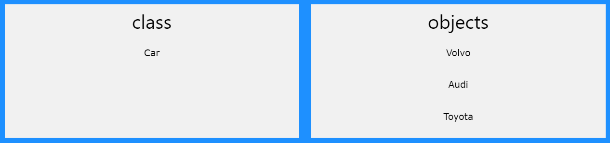

C++ is a cross-platform language that can be used to create
high-performance applications.
C++ was developed by Bjarne Stroustrup, as an extension to the
C language.
C++ gives programmers a high level of control over system
resources and memory.
The language was updated 4 major
times in 2011, 2014, 2017, and 2020 to C++11, C++14, C++17,
C++20.
C++ is one of the world's most popular programming languages.
C++ can be found in today's operating systems, Graphical User
Interfaces, and embedded systems.
C++ is an object-oriented programming language which gives a
clear structure to programs and allows code to be reused,
lowering development costs.
C++ is portable and can be used to develop applications that
can be adapted to multiple platforms.
C++ is fun and easy to learn!
As C++ is close to C, C#
and Java, it makes it easy for
programmers to switch to C++ or vice versa.
C++ was developed as an extension of C, and both languages
have almost the same syntax.
The main difference between C and C++ is that C++ support
classes and objects, while C does not.
This tutorial will teach you the basics of C++.
It is not necessary to have any prior programming experience.
To start using C++, you need two things:
There are many text editors and compilers to choose from. In this tutorial, we will use an IDE (see below).
An IDE (Integrated Development Environment) is used to edit
AND compile the code.
Popular IDE's include Code::Blocks, Eclipse, and Visual
Studio. These are all free, and they can be used to both edit
and debug C++ code.
Note: Web-based IDE's can work as well, but functionality is
limited.
We will use Code::Blocks in our tutorial, which we believe is
a good place to start.
You can find the latest version of Codeblocks at
http://www.codeblocks.org/. Download the mingw-setup.exe file, which will
install the text editor with a compiler.
Let's create our first C++ file.
Open Codeblocks and go to File > New > Empty File.
Write the following C++ code and save the file as
myfirstprogram.cpp(File > Save File as):
#include <iostream>
using namespace std;
int main()
{
cout << "Hello World!";
return 0;
}
Don't worry if you don't understand the code above - we will
discuss it in detail in later chapters. For now, focus on how
to run the code.
In Codeblocks, it should look like this:
Then, go to Build > Build and Run to run (execute) the program. The result will look something to this:
Hello World!
Process returned 0 (0x0) execution time : 0.011 s
Press any key to continue.
Congratulations! You have now written and executed your first C++ program.
Let's break up the following code to understand it better:
#include <iostream>
using namespace std;
int main()
{
cout << "Hello World!";
return 0;
}
Line 1: #include <iostream> is a header file library that lets us work with input and output objects, such as cout (used in line 5). Header files add functionality to C++ programs.
Line 2: using namespace std means that we can use names for objects and variables from the standard library.
Don't worry if you don't understand how #include <iostream>
and using namespace std works. Just think of it as something that
(almost) always appears in your program.
Line 3: A blank line. C++ ignores white space. But we
use it to make the code more readable.
Line 4: Another thing that always appear in a C++
program, is int main(). This is called a function. Any code
inside its curly brackets {} will be executed.
Line 5: cout (pronounced "see-out") is an object used
together with the insertion operator (<<) to output/print
text. In our example it will output "Hello World".
Note: Every C++ statement ends with a semicolon (;).
Note: The body of int main() could also been written
as:
int main () { cout << "Hello World! "; return 0; }
Remember: The compiler ignores white spaces. However,
multiple lines makes the code more readable.
Line 6: return 0 ends the main function.
Line 7: Do not forget to add the closing curly bracket
} to actually end the main function.
You might see some C++ programs that runs without the standard namespace library. The using namespace std line can be omitted and replaced with the std keyword, followed by the :: operator for some objects:
#include <iostream>
int main()
{
std::cout << "Hello World!";
return 0;
}
"It is up to you if you want to include the standard namespace library or not."
The cout object, together with the << operator, is used to output values/print text:
#include <iostream>
using namespace std;
int main()
{
cout << "Hello World!";
return 0;
}
You can add as many cout objects as you want. However, note that it does not insert a new line at the end of the output:
#include <iostream>
using namespace std;
int main()
{
cout << "Hello World!";
cout << "I am learning C++";
return 0;
}
To insert a new line, you can use the \n character:
#include <iostream>
using namespace std;
int main()
{
cout << "Hello World! \n";
cout << "I am learning C++";
return 0;
}
Tip: Two \n characters after each other will create a blank line:
#include <iostream>
using namespace std;
int main()
{
cout << "Hello World! \n\n";
cout << "I am learning C++";
return 0;
}
Another way to insert a new line, is with the endl manipulator:
#include <iostream>
using namespace std;
int main()
{
cout << "Hello World!" << endl;
cout << "I am learning C++";
return 0;
}
Both \n and endl are used to break lines. However, \n is most
used.
But what is \n exactly?
The newline character (\n) is called an escape sequence, and
it forces the cursor to change its position to the beginning
of the next line on the screen. This results in a new line.
Comments can be used to explain C++ code, and to make it more readable. It can also be used to prevent execution when testing alternative code. Comments can be singled-lined or multi-lined.
Single-line comments start with two forward slashes (//).
Any text between // and the end of the line is ignored by the
compiler (will not be executed).
This example uses a single-line comment before a line of
code:
// This is a comment.
cout << "Hello World!" << endl;
This example uses a single-line comment at the end of a line
of code:
cout << "Hello World!" << endl; // This is a comment.
Multi-line comments start with /* and ends with */.
Any text between /* and */ will be ignored by the compiler:
/* The code below will print the words Hello
World!
to the screen, and it is amazing */
cout << "Hello World!" << endl;
"It is up to you which you want to use. Normally, we use // for short comments, and /* */ for longer."
Variables are containers for storing data values.
In C++, there are different types of variables (defined with
different keywords), for example:
To create a variable, specify the type and assign it a value:
type variableName = value;
Where type is one of C++ types (such as int), and variableName
is the name of the variable (such as x or
myName). The equal sign (=) is used to assign
values to the variable.
To create a variable that should store a number, look at the
following example:
Create a variable called myNum of type int and assign it the value 15:
int myNum = 15;
cout << myNum;
You can also declare a variable without assigning the value, and assign the value later:
int myNum;
myNum = 15;
cout << myNum;
Note that if you assign a new value to an existing variable, it will overwrite the previous value:
int myNum = 15; // myNum is 15
myNum = 10; // Now myNum is 10
cout << myNum; // Outputs 10
A demonstration of other data types:
int myNum = 5; // Integer (whole number without decimals)
double myFloatNum = 5.99; // Floating point number (with decimals)
char myLetter = 'D'; // Character
string myText = "Hello"; // String (text)
bool myBoolean = true; // Boolean (true or false)
You will learn more about the individual types in the Data Types chapter.
The cout object is used together with the << operator to
display variables.
To combine both text and a variable, separate them with the <<
operator:
int myAge = 35;
cout << "I am " << myAge << " years old.";
To add a variable to another variable, you can use the + operator:
int x = 5;
int y = 6;
int sum = x + y;
cout << sum;
You have already learned that cout is used to output
(print) values. Now we will use cin to get user input.
cin is a predefined variable that reads data from the
keyboard with the extraction operator (>>).
In the following example, the user can input a number, which
is stored in the variable x. Then we print the value of
x:
int x;
cout << "Type a number: "; // Type a number and press enter
cin >> x; // Get user input from the keyboard
cout << "Your number is: " << x; // Display the input value
cout is pronounced "see-out". Used for output,
and uses the insertion operator ( << )
cin is pronounced "see-in". Used for input, and
uses the extraction operator ( >> )
In this example, the user must input two numbers. Then we
print the sum by calculating (adding) the two numbers:
int x, y;
int sum;
cout << "Type a number: ";
cin >> x;
cout << "Type another number: ";
cin >> y;
sum = x + y;
cout << "Sum is: " << sum;
Type a number: 6
Type another number: 4
Sum is: 10
There you go! You just built a basic calculator!
As explained in the Variables chapter, a variable in C++ must be a specified data type:
int myNum = 5; // Integer (whole number)
float myFloatNum = 5.99; // Floating point number
double myDoubleNum = 9.98; // Floating point number
char myLetter = 'D'; // Character
bool myBoolean = true; // Boolean
string myText = "Hello"; // String
The data type specifies the size and type of information the variable will store:
| Data Type | Size | Description |
|---|---|---|
| boolean | 1 byte | Stores true or false values |
| char | 1 byte | Stores a single character/letter/number, or ASCII values |
| int | 2 or 4 bytes | Stores whole numbers, without decimals |
| float | 4 byte | Stores fractional numbers, containing one or more decimals. Sufficient for storing 7 decimal digits |
| double | 8 byte | Stores fractional numbers, containing one or more decimals. Sufficient for storing 15 decimal digits |
You will learn more about the individual data types below :
Use int when you need to store a whole number without decimals, like 35 or 1000, and float or double when you need a floating point number (with decimals), like 9.99 or 3.14515.
int myNum = 1000;
cout << myNum;
float myNum = 5.75;
cout << myNum;
double myNum = 19.99;
cout << myNum;
The precision of a floating point value indicates how many digits the value can have after the decimal point. The precision of float is only six or seven decimal digits, while double variables have a precision of about 15 digits. Therefore it is safer to use double for most calculations.
A floating point number can also be a scientific number with an "e" to indicate the power of 10:
float f1 = 35e3;
double d1 = 12E4;
cout << f1;
cout << d1;
A boolean data type is declared with the bool keyword and can
only take the values true or false.
When the value is returned, true = 1 and false = 0.
bool isCodingFun = true;
bool isFishTasty = false;
cout << isCodingFun; // Outputs 1 (true)
cout << isFishTasty; // Outputs 0 (false)
Boolean values are mostly used for conditional testing, which you will learn more about in a later chapter.
The char data type is used to store a single character. The character must be surrounded by single quotes, like 'A' or 'c':
char myGrade = 'B';
cout << myGrade;
Alternatively, you can use ASCII values to display certain characters:
char a = 65, b = 66, c = 67;
cout << a << endl;
cout << b << endl;
cout << c << endl;
A
B
c
The string type is used to store a sequence of characters (text). This is not a built-in type, but it behaves like one in its most basic usage. String values must be surrounded by double quotes:
string greeting = "Hello";
cout << greeting;
To use strings, you must include an additional header file in the source code, the <string> library:
// Include the string library
#include <string>
// Create a string variable
string greeting = "Hello";
// Output string value
cout << greeting;
"Type and run all these code to see output"
"Remember Practice Makes Men Perfect"
Operators are used to perform operations on variables and
values.
In the example below, we use the + operator to add
together two values:
int x = 100 + 50;
cout << x;
Although the + operator is often used to add together two values, like in the example above, it can also be used to add together a variable and a value, or a variable and another variable:
int sum1 = 100 + 50; // 150 (100 + 50)
int sum2 = sum1 + 250; // 400 (150 + 250)
int sum3 = sum2 + sum2; // 800 (400 + 400)
C++ divides the operators into the following groups:
| Operator | Name | Description | Example |
|---|---|---|---|
| + | Addition | Adds together two values | x + y |
| - | Subtraction | Subtracts one value from another | x - y |
| * | Multiplication | Multiplies two values | x * y |
| / | Division | Divides one value by another | x / y |
| % | Modulus | Returns the division remainder | x % y |
| ++ | Increment | Increases the value of a variable by 1 | ++ x |
| -- | Decrement | Decreases the value of a variable by 1 | -- x |
Assignment operators are used to assign values to variables.
In the example below, we use the assignment operator
(=) to assign the value 10 to a variable called
x:
int x = 8;
cout << x;
The addition assignment operator (+=) adds a value to a variable:
int x = 8;
x += 10;
cout << x;
18
A list of all assignment operators:
| Operator | Example | Same As |
|---|---|---|
| = | x = 8 | x = 8 |
| += | x += 8 | x = x + 8 |
| -= | x -= 8 | x = x - 8 |
| *= | x *= 8 | x = x * 8 |
| /= | x /= 8 | x = x / 8 |
| %= | x %= 8 | x = x % 8 |
| &= | x &= 8 | x = x & 8 |
| |= | x |= 8 | x = x | 8 |
| ^= | x ^= 8 | x = x ^ 8 |
| >>= | x >>= 8 | x = x >> 8 |
| <<= | x <<= 8 | x = x << 8 |
Comparison operators are used to compare two values.
Note: The return value of a comparison is either true
(1) or false (0).
In the following example, we use the greater than operator (>)
to find out if 5 is greater than 3:
int x = 5;
int y = 3;
cout << (x > y); // returns 1 (true) because 5 is greater than 3
A list of all comparison operators:
| Operator | Name | Example |
|---|---|---|
| == | Equal to | x == y |
| != | Not equal | x != y |
| > | Greater than | x > y |
| < | Less than | x < y |
| >= | Greater than or Equal to | x >= y |
| <= | Less than or Equal to | x <= y |
You will learn much more about comparison operators and how to use them in a later chapter.
Logical operators are used to determine the logic between variables or values:
| Operator | Name | Description | Example |
|---|---|---|---|
| && | Logical and | Returns true if both statements are true | x < 5 && x < 10 |
| || | Logical or | Returns true if one of the statements is true | x < 5 || x < 4 |
| ! | Logical not | Reverse the result, returns false if the result is true | !(x < 5 && x < 10) |
Strings are used for storing text.
A string variable contains a collection of characters
surrounded by double quotes:
Create a variable of type string and assign it a value:
string greeting = "Hello";
To use strings, you must include an additional header file in the source code, the <string> library:
// Include the string library
#include <string>
// Create a string variable
string greeting = "Hello";
The + operator can be used between strings to add them together to make a new string. This is called concatenation:
string firstName = "John ";
string lastName = "Doe";
string fullName = firstName + lastName;
cout << fullName;
In the example above, we added a space after firstName to create a space between John and Doe on output. However, you could also add a space with quotes (" " or ' '):
string firstName = "John";
string lastName = "Doe";
string fullName = firstName + " " + lastName;
cout << fullName;
Result in both cases:
John Doe
A string in C++ is actually an object, which contain functions that can perform certain operations on strings. For example, you can also concatenate strings with the append() function:
string firstName = "John ";
string lastName = "Doe";
string fullName = firstName.append(lastName);
cout << fullName;
C++ uses the + operator for both addition and
concatenation.
Numbers are added. Strings are concatenated.
"If you add two numbers, the result will be a number:"
int x = 10;
int y = 20;
int z = x + y; // z will be 30 (an integer)
"If you add two strings, the result will be a string concatenation:"
string x = "10";
string y = "20";
string z = x + y; // z will be 1020 (a string)
"If you try to add a number to a string, an error occurs:"
string x = "10";
int y = 20;
string z = x + y; // This will give an error
To get the length of a string, use the length() function:
string txt = "ABCDEFGHIJKLMNOPQRSTUVWXYZ";
cout << "The length of the txt string is: " << txt.length();
Tip: You might see some C++ programs that use the size() function to get the length of a string. This is just an alias of length(). It is completely up to you if you want to use length() or size():
string txt = "ABCDEFGHIJKLMNOPQRSTUVWXYZ";
cout << "The length of the txt string is: " << txt.size();
You can access the characters in a string by referring to its
index number inside square brackets [].
This example prints the first character in
myString:
string myString = "Hello";
cout << myString[0]; // Outputs H
Note: String indexes start with 0: [0] is the first
character. [1] is the second character, etc.
This example prints the second character in
myString:
string myString = "Hello";
cout << myString[1]; // Outputs e
To change the value of a specific character in a string, refer to the index number, and use single quotes:
string myString = "Hello";
myString[0] = 'J';
cout << myString;
// Outputs Jello instead of Hello
Because strings must be written within quotes, C++ will misunderstand this string, and generate an error:
string txt = "We are the so-called "Vikings" from the north.";
// This will generate an error!
The solution to avoid this problem, is to use the backslash escape character. The backslash (\) escape character turns special characters into string characters:
| Escape Character | Result | Description |
|---|---|---|
| \' | ' | Single quote |
| \" | " | Double quote |
| \\ | \ | Backslash |
The sequence \" inserts a double quote in a string:
string txt = "We are the so-called \"Vikings\" from the north.";
The sequence \' inserts a single quote in a string:
string txt = "It\'s alright.";
The sequence \\ inserts a single backslash in a string:
string txt = "The character \\ is called backslash.";
Other popular escape characters in C++ are:
| Escape Character | Result |
|---|---|
| \n | New Line |
| \t | Tab |
It is possible to use the extraction operator >> on cin to display a string entered by a user:
string firstName;
cout << "Type your first name: ";
cin >> firstName; // get user input from the keyboard
cout << "Your name is: " << firstName;
// Type your first name: John
// Your name is: John
However, cin considers a space (whitespace, tabs, etc) as a terminating character, which means that it can only display a single word (even if you type many words):
string fullName;
cout << "Type your full name: ";
cin >> fullName;
cout << "Your name is: " << fullName;
// Type your full name: John Doe
// Your name is: John
From the example above, you would expect the program to print
"John Doe", but it only prints "John".
That's why, when working with strings, we often use the
getline() function to read a line of text. It takes cin
as the first parameter, and the string variable as second:
string fullName;
cout << "Type your full name: ";
getline (cin, fullName);
cout << "Your name is: " << fullName;
// Type your full name: John Doe
// Your name is: John Doe
You might see some C++ programs that runs without the standard namespace library. The using namespace std line can be omitted and replaced with the std keyword, followed by the :: operator for string (and cout) objects:
#include <iostream>
#include <string>
int main()
{
std::string greeting = "Hello";
std::cout << greeting;
return 0;
}
It is up to you if you want to include the standard namespace library or not.
C++ has many functions that allows you to perform mathematical tasks on numbers.
The max(x,y) function can be used to find the highest value of x and y:
cout << max(5, 10);
// Outputs 10
And the min(x,y) function can be used to find the lowest value of x and y:
cout << min(5, 10);
// Outputs 5
Other functions, such as sqrt (square root), round (rounds a number) and log (natural logarithm), can be found in the <cmath> header file:
// Include the cmath library
#include <cmath>
cout << sqrt(64);
cout << round(2.6);
cout << log(2);
A list of other popular Math functions (from the <cmath> library) can be found in the table below:
| Function | Description |
|---|---|
| abs(x) | Returns the absolute value of x |
| acos(x) | Returns the arccosine of x |
| asin(x) | Returns the arcsine of x |
| atan(x) | Returns the arctangent of x |
| cbrt(x) | Returns the cube root of x |
| ceil(x) | Returns the value of x rounded up to its nearest integer |
| cos(x) | Returns the cosine of x |
| cosh(x) | Returns the hyperbolic cosine of x |
| exp(x) | Returns the value of Ex |
| expm1(x) | Returns ex -1 |
| fabs(x) | Returns the absolute value of a floating x |
| fdim(x, y) | Returns the positive difference between x and y |
| floor(x) | Returns the value of x rounded down to its nearest integer |
| hypot(x, y) | Returns sqrt(x2 +y2) without intermediate overflow or underflow |
| fma(x, y, z) | Returns x*y+z without losing precision |
| fmax(x, y) | Returns the highest value of a floating x and y |
| fmin(x, y) | Returns the lowest value of a floating x and y |
| fmod(x, y) | Returns the floating point remainder of x/y |
| pow(x, y) | Returns the value of x to the power of y |
| sin(x) | Returns the sine of x (x is in radians) |
| sinh(x) | Returns the hyperbolic sine of a double value |
| tan(x) | Returns the tangent of an angle |
| tanh(x) | Returns the hyperbolic tangent of a double value |
Very often, in programming, you will need a data type that can only have one of two values, like:
For this, C++ has a bool data type, which can take the values true (1) or false (0).
A boolean variable is declared with the bool keyword and can only take the values true or false:
bool isCodingFun = true;
bool isFishTasty = false;
cout << isCodingFun; // Outputs 1 (true)
cout << isFishTasty; // Outputs 0 (false)
From the example above, you can read that a true value
returns 1, and false returns 0.
However, it is more common to return boolean values from
boolean expressions (see below topic).
A Boolean expression is a C++ expression that returns a
boolean value: 1 (true) or 0 (false).
You can use a comparison operator, such as the
greater than (>) operator to find out if an expression
(or a variable) is true:
int x = 10;
int y = 9;
cout << (x > y); // returns 1 (true), because 10 is higher than 9
cout << (10 > 9); // returns 1 (true), because 10 is higher than 9
In the examples below, we use the equal to (==) operator to evaluate an expression:
int x = 10;
cout << (x == 10); // returns 1 (true), because the value of x is equal to 10
cout << (10 == 15); // returns 0 (false), because 10 is not equal to 15
Booleans are the basis for all C++ comparisons and conditions.
You will learn more about
conditions (if...else)
in the next chapter.
C++ supports the usual logical conditions from mathematics:
You can use these conditions to perform different actions for
different decisions.
C++ has the following conditional statements:
Use the if statement to specify a block of C++ code to be executed if a condition is true.
if (condition)
{
// block of code to be executed
// if the condition is true
}
"Note that if is in lowercase letters. Uppercase letters (If or IF) will generate an error."
In the example below, we test two values to find out if 20 is greater than 18. If the condition is true, print some text:
if (20 > 18)
{
cout << "20 is greater than 18";
}
We can also test variables:
int x = 20;
int y = 18;
if (x > y)
{
cout << "x is greater than y";
}
In the example above we use two variables, x and y, to test whether x is greater than y (using the > operator). As x is 20, and y is 18, and we know that 20 is greater than 18, we print to the screen that "x is greater than y".
Use the else statement to specify a block of code to be executed if the condition is false.
if (condition)
{
// block of code to be executed
// if the condition is true
}
else
{
// block of code to be executed
// if the condition is false
}
int time = 20;
if (time < 18)
{
cout << "Good day.";
}
else
{
cout << "Good evening.";
}
// Outputs "Good evening."
In the example above, time (20) is greater than 18, so the condition is false. Because of this, we move on to the else condition and print to the screen "Good evening". If the time was less than 18, the program would print "Good day".
Use the else if statement to specify a new condition if the first condition is false.
if (condition1)
{
// block of code to be executed
// if the condition1 is true
}
else if (condition2)
{
// block of code to be executed
// if the condition1 is false
// and condition2 is true
}
else
{
// block of code to be executed
// if both the conditions are false
}
int time = 22;
if (time < 10)
{
cout << "Good morning.";
}
else if (time < 20)
{
cout << "Good day.";
}
else
{
cout << "Good evening.";
}
// Outputs "Good evening."
In the example above, time (22) is greater than 10, so the
first condition is false. The next condition, in the
else if statement, is also false, so we move on to the else
condition since condition1 and condition2 is
both false - and print to the screen "Good evening".
However, if the time was 14, our program would print "Good
day."
There is also a short-hand if else, which is known as the ternary operator because it consists of three operands. It can be used to replace multiple lines of code with a single line. It is often used to replace simple if else statements:
variable = (condition) ? expressionTrue : expressionFalse;
Instead of writing:
int time = 20;
if (time < 18)
{
cout << "Good day.";
}
else {
cout << "Good evening.";
}
You can simply write:
int time = 20;
string result = (time < 18) ? "Good day." : "Good evening.";
cout << result;
Both results the same!
Use the switch statement to select one of many code blocks to be executed.
switch(expression)
{
case x:
// code block
break;
case y:
// code block
break;
default:
// code block
}
This is how it works:
The example below uses the weekday number to calculate the weekday name:
int day = 4;
switch (day)
{
case 1:
cout << "Monday";
break;
case 2:
cout << "Tuesday";
break;
case 3:
cout << "Wednesday";
break;
case 4:
cout << "Thursday";
break;
case 5:
cout << "Friday";
break;
case 6:
cout << "Saturday";
break;
case 7:
cout << "Sunday";
break;
}
// Outputs "Thursday" (day 4)
When C++ reaches a break keyword, it breaks out of the switch
block.
This will stop the execution of more code and case testing
inside the block.
When a match is found, and the job is done, it's time for a
break. There is no need for more testing.
A break can save a lot of execution time because it
"ignores" the execution of all the rest of the code in the
switch block.
The default keyword specifies some code to run if there is no case match:
int day = 4;
switch (day)
{
case 6:
cout << "Today is Saturday";
break;
case 7:
cout << "Today is Sunday";
break;
default:
cout << "Looking forward to the Weekend";
}
// Outputs "Looking forward to the Weekend"
Note: The default keyword must be used as the last statement in the switch, and it does not need a break.
Loops can execute a block of code as long as a specified
condition is reached.
Loops are handy because they save time, reduce errors, and
they make code more readable.
The while loop loops through a block of code as long as a specified condition is true:
while (condition)
{
// code block to be executed
}
In the example below, the code in the loop will run, over and over again, as long as a variable (i) is less than 5:
int i = 0;
while (i < 5)
{
cout << i << "\n";
i++;
}
0
1
2
3
4
Note: Do not forget to increase the variable used in the condition, otherwise the loop will never end!
The do/while loop is a variant of the while loop. This loop will execute the code block once, before checking if the condition is true, then it will repeat the loop as long as the condition is true.
do
{
// code block to be executed
}
while (condition);
The example below uses a do/while loop. The loop will always be executed at least once, even if the condition is false, because the code block is executed before the condition is tested:
int i = 0;
do
{
cout << i << "\n";
i++;
}
while (i < 5);
Do not forget to increase the variable used in the condition, otherwise the loop will never end!
When you know exactly how many times you want to loop through a block of code, use the for loop instead of a while loop:
for (initialization; condition; updation)
{
// code block to be executed
}
Statement 1 is executed (one time) before the execution
of the code block.
Statement 2 defines the condition for executing the
code block.
Statement 3 is executed (every time) after the code
block has been executed.
The example below will print the numbers 0 to 4:
for (int i = 0; i < 5; i++)
{
cout << i << "\n";
}
Statement 1 sets a variable before the loop starts (int i =
0).
Statement 2 defines the condition for the loop to run (i must
be less than 5). If the condition is true, the loop will start
over again, if it is false, the loop will end.
Statement 3 increases a value (i++) each time the code block
in the loop has been executed.
Another Example
This example will only print even values between 0 and 10:
for (int i = 0; i <= 10; i = i + 2)
{
cout << i << "\n";
}
0
2
4
6
8
10
You have already seen the break statement used in an earlier
chapter of this tutorial. It was used to "jump out" of a
switch statement.
The break statement can also be used to jump out of a loop.
This example jumps out of the loop when i is equal to 4:
for (int i = 0; i < 10; i++)
{
if (i == 4)
{
break;
}
cout << i << "\n";
}
The continue statement breaks one iteration (in the loop), if
a specified condition occurs, and continues with the next
iteration in the loop.
This example skips the value of 4:
for (int i = 0; i < 10; i++)
{
if (i == 4)
{
continue;
}
cout << i << "\n";
}
You can also use break and continue in while loops:
int i = 0;
while (i < 10)
{
cout << i << "\n";
i++;
if (i == 4)
{
break;
}
}
int i = 0;
while (i < 10)
{
cout << i << "\n";
i++;
if (i == 4)
{
break;
}
}
Arrays are used to store multiple values in a single variable, instead of declaring separate variables for each value.
To declare an array, define the variable type, specify the name of the array followed by square brackets and specify the number of elements it should store:
string cars[4];
We have now declared a variable that holds an array of four strings. To insert values to it, we can use an array literal - place the values in a comma-separated list, inside curly braces:
string cars[4] = {"Volvo", "BMW", "Ford", "Mazda"};
To create an array of three integers, you could write:
int myNum[3] = {10, 20, 30};
You access an array element by referring to the index number inside square brackets []. This statement accesses the value of the first element in cars:
string cars[4] = {"Volvo", "BMW", "Ford", "Mazda"};
cout << cars[0];
// Outputs Volvo
Note: Array indexes start with 0: [0] is the first element. [1] is the second element, etc.
To change the value of a specific element, refer to the index number:
cars[0] = "Opel";
string cars[4] = {"Volvo", "BMW", "Ford", "Mazda"};
cars[0] = "Opel";
cout << cars[0];
// Now outputs Opel instead of Volvo
You can loop through the array elements with the for loop.
The following example outputs all elements in the cars array:
string cars[4] = {"Volvo", "BMW", "Ford", "Mazda"};
for (int i = 0; i < 4; i++)
{
cout << cars[i] << "\n";
}
The following example outputs the index of each element together with its value:
string cars[4] = {"Volvo", "BMW", "Ford", "Mazda"};
for (int i = 0; i < 4; i++)
{
cout << i << ": " << cars[i] << "\n";
}
You don't have to specify the size of the array. But if you don't, it will only be as big as the elements that are inserted into it:
string cars[] = {"Volvo", "BMW", "Ford"}; // size of array is always 3
This is completely fine. However, the problem arise if you want extra space for future elements. Then you have to overwrite the existing values:
string cars[] = {"Volvo", "BMW", "Ford"};string cars[] = {"Volvo", "BMW", "Ford", "Mazda", "Tesla"};
If you specify the size however, the array will reserve the extra space:
string cars[5] = {"Volvo", "BMW", "Ford"};
// size of array is 5, even though it's only three elements inside it
Now you can add a fourth and fifth element without overwriting the others:
cars[3] = "Mazda";
cars[4] = "Tesla";
It is also possible to declare an array without specifying the elements on declaration, and add them later:
string cars[5];
cars[0] = "Volvo";
cars[1] = "BMW";
...
To get the size of an array, you can use the sizeof() operator:
int myNumbers[5] = {10, 20, 30, 40, 50};
cout << sizeof(myNumbers);
20
Why did the result show 20 instead of 5, when the array contains 5 elements?
It is because the sizeof() operator returns the size of a type in bytes.
You learned from the Data Types chapter that an int type is usually 4 bytes, so from the example above, 4 x 5 (4 bytes x 5 elements) = 20 bytes.
To find out how many elements an array has, you have to divide the size of the array by the size of the data type it contains:
int myNumbers[5] = {10, 20, 30, 40, 50};
int getArrayLength = sizeof(myNumbers) / sizeof(int);
cout << getArrayLength;
5
A multi-dimensional array is an array of arrays.
To declare a multi-dimensional array, define the variable type, specify the name of the array followed by square brackets which specify how many elements the main array has, followed by another set of square brackets which indicates how many elements the sub-arrays have:
string letters[2][4];
As with ordinary arrays, you can insert values with an array literal - a comma-separated list inside curly braces. In a multi-dimensional array, each element in an array literal is another array literal.
string letters[2][4] =
{
{ "A", "B", "C", "D" },
{ "E", "F", "G", "H" }
};
Each set of square brackets in an array declaration adds another dimension to an array. An array like the one above is said to have two dimensions.
Arrays can have any number of dimensions. The more dimensions an array has, the more complex the code becomes. The following array has three dimensions:
sstring letters[2][2][2] =
{
{
{ "A", "B" },
{ "C", "D" }
},
{
{ "E", "F" },
{ "G", "H" }
}
};
To access an element of a multi-dimensional array, specify an index number in each of the array's dimensions.
This statement accesses the value of the element in the first row (0) and third column (2) of the letters array.
string letters[2][4] =
{
{ "A", "B", "C", "D" },
{ "E", "F", "G", "H" }
};
cout << letters[0][2];
// Outputs "C"
Remember that: Array indexes start with 0: [0] is the first element. [1] is the second element, etc.
To change the value of an element, refer to the index number of the element in each of the dimensions:
string letters[2][4] =
{
{ "A", "B", "C", "D" },
{ "E", "F", "G", "H" }
};
letters[0][0] = "Z";
cout << letters[0][0];
// Now outputs "Z" instead of "A"
To loop through a multi-dimensional array, you need one loop for each of the array's dimensions.
The following example outputs all elements in the letters array:
string letters[2][4] =
{
{ "A", "B", "C", "D" },
{ "E", "F", "G", "H" }
};
for(int i = 0; i < 2; i++)
{
for(int j = 0; j < 4; j++)
{
cout << letters[i][j] << "\n";
}
}
This example shows how to loop through a three-dimensional array:
string letters[2][2][2] =
{
{
{ "A", "B" },
{ "C", "D" }
},
{
{ "E", "F" },
{ "G", "H" }
}
};
for(int i = 0; i < 2; i++)
{
for(int j = 0; j < 2; j++)
{
for(int k = 0; k < 2; k++)
{
cout << letters[i][j][k] << "\n";
}
}
}
Multi-dimensional arrays are great at representing grids. This example shows a practical use for them. In the following example we use a multi-dimensional array to represent a small game of Battleship:
// We put "1" to indicate there is a ship.
bool ships[4][4] =
{
{ 0, 1, 1, 0 },
{ 0, 0, 0, 0 },
{ 0, 0, 1, 0 },
{ 0, 0, 1, 0 }
};
// Keep track of how many hits the player has and how many turns they have played in these variables
int hits = 0;
int numberOfTurns = 0;
// Allow the player to keep going until they have hit all four ships
while (hits < 4)
{
int row, column;
cout << "Selecting coordinates\n";
// Ask the player for a row
cout << "Choose a row number between 0 and 3: ";
cin >> row;
// Ask the player for a column
cout << "Choose a column number between 0 and 3: ";
cin >> column;
// Check if a ship exists in those coordinates
if (ships[row][column])
{
// If the player hit a ship, remove it by setting the value to zero.
ships[row][column] = 0;
// Increase the hit counter
hits++;
// Tell the player that they have hit a ship and how many ships are left
cout << "Hit! " << (4-hits) << " left.\n\n";
}
else
{
// Tell the player that they missed
cout << "Miss\n\n";
}
// Count how many turns the player has taken
numberOfTurns++;
}
cout << "Victory!\n";
cout << "You won in " << numberOfTurns << " turns";
Structures (also called structs) are a way to group several related variables into one place. Each variable in the structure is known as a member of the structure.
Unlike an array, a structure can contain many different data types (int, string, bool, etc.).
To create a structure, use the struct keyword and declare each of its members inside curly braces. After the declaration, specify the name of the structure variable (myStructure in the example below):
struct
{ // Structure declaration
int myNum; // Member (int variable)
string myString; // Member (string variable)
} myStructure; // Structure variable
To access members of a structure, use the dot syntax (.):
Assign data to members of a structure and print it:
// Create a structure variable called myStructure
struct
{
int myNum;
string myString;
} myStructure;
// Assign values to members of myStructure
myStructure.myNum = 1;
myStructure.myString = "Hello World!";
// Print members of myStructure
cout << myStructure.myNum << "\n";
cout << myStructure.myString << "\n";
You can use a comma (,) to use one structure in many variables:
struct
{
int myNum;
string myString;
} myStruct1, myStruct2, myStruct3;
// Multiple structure variables separated with commas
This example shows how to use a structure in two different variables:
Use one structure to represent two cars:
struct
{
string brand;
string model;
int year;
} myCar1, myCar2;
// We can add variables by separating them with a comma here
// Put data into the first structure
myCar1.brand = "BMW";
myCar1.model = "X5";
myCar1.year = 1999;
// Put data into the second structure
myCar2.brand = "Ford";
myCar2.model = "Mustang";
myCar2.year = 1969;
// Print the structure members
cout << myCar1.brand << " " << myCar1.model << " " << myCar1.year << "\n";
cout << myCar2.brand << " " << myCar2.model << " " << myCar2.year << "\n";
By giving a name to the structure, you can treat it as a data type. This means that you can create variables with this structure anywhere in the program at any time.
To create a named structure, put the name of the structure right after the struct keyword:
// This structure is named "myDataType"
struct myDataType
{
int myNum;
string myString;
};
To declare a variable that uses the structure, use the name of the structure as the data type of the variable:
myDataType myVar;
Use one structure to represent two cars:
// Declare a structure named "car"
struct car
{
string brand;
string model;
int year;
};
int main()
{
// Create a car structure and store it in myCar1;
car myCar1;
myCar1.brand = "BMW";
myCar1.model = "X5";
myCar1.year = 1999;
// Create another car structure and store it in myCar2;
car myCar2;
myCar2.brand = "Ford";
myCar2.model = "Mustang";
myCar2.year = 1969;
// Print the structure members
cout << myCar1.brand << " " << myCar1.model << " " << myCar1.year << "\n";
cout << myCar2.brand << " " << myCar2.model << " " << myCar2.year << "\n";
return 0;
}
A reference variable is a "reference" to an existing variable, and it is created with the & operator:
string food = "Pizza"; // food variable
string &meal = food; // reference to food
Now, we can use either the variable name food or the reference name meal to refer to the food variable:
string food = "Pizza";
string &meal = food;
cout << food << "\n"; // Outputs Pizza
cout << meal << "\n"; // Outputs Pizza
In the example from the previous page, the & operator was used to create a reference variable. But it can also be used to get the memory address of a variable; which is the location of where the variable is stored on the computer.
When a variable is created in C++, a memory address is assigned to the variable. And when we assign a value to the variable, it is stored in this memory address.
To access it, use the & operator, and the result will represent where the variable is stored:
string food = "Pizza";
cout << &food; // Outputs 0x6dfed4
Note: The memory address is in hexadecimal form (0x..). Note that you may not get the same result in your program.
And why is it useful to know the memory address?
References and Pointers (which you will learn about in the next chapter) are important in C++, because they give you the ability to manipulate the data in the computer's memory - which can reduce the code and improve the performance.
These two features are one of the things that make C++ stand out from other programming languages, like Python and Java.
You learned from the previous chapter, that we can get the memory address of a variable by using the & operator:
string food = "Pizza"; // A food variable of type string
cout << food; // Outputs the value of food (Pizza)
cout << &food; // Outputs the memory address of food (0x6dfed4)
A pointer however, is a variable that stores the memory address as its value.
A pointer variable points to a data type (like int or string) of the same type, and is created with the * operator. The address of the variable you're working with is assigned to the pointer:
string food = "Pizza";
// A food variable of type string
string* ptr = &food;
// A pointer variable, with the name ptr, that stores the address of food
// Output the value of food (Pizza)
cout << food << "\n";
// Output the memory address of food (0x6dfed4)
cout << &food << "\n";
// Output the memory address of food with the pointer (0x6dfed4)
cout << ptr << "\n";
Create a pointer variable with the name ptr, that points to a string variable, by using the asterisk sign * (string* ptr). Note that the type of the pointer has to match the type of the variable you're working with.
Use the & operator to store the memory address of the variable called food, and assign it to the pointer.
Now, ptr holds the value of food's memory address.
Tip: There are three ways to declare pointer variables, but the first way is preferred:
string* mystring; // Preferred
string *mystring;
string * mystring;
A function is a block of code which only runs when it is called.
You can pass data, known as parameters, into a function.
Functions are used to perform certain actions, and they are important for reusing code: Define the code once, and use it many times.
C++ provides some pre-defined functions, such as main(), which is used to execute code. But you can also create your own functions to perform certain actions.
To create (often referred to as declare) a function, specify the name of the function, followed by parentheses ():
void myFunction()
{
// code to be executed
}
Declared functions are not executed immediately. They are "saved for later use", and will be executed later, when they are called.
To call a function, write the function's name followed by two parentheses () and a semicolon ;
In the following example, myFunction() is used to print a text (the action), when it is called:
Inside main, call myFunction():
// Create a function
void myFunction()
{
cout << "I just got executed!";
}
int main()
{
myFunction(); // call the function
return 0;
}
// Outputs "I just got executed!"
A function can be called multiple times:
void myFunction()
{
cout << "I just got executed!\n";
}
int main()
{
myFunction();
myFunction();
myFunction();
return 0;
}
// I just got executed!
// I just got executed!
// I just got executed!
A C++ function consist of two parts:
void myFunction() // declaration
{
// the body of the function (definition)
}
Note: If a user-defined function, such as myFunction() is declared after the main() function, an error will occur:
int main()
{
myFunction();
return 0;
}
void myFunction()
{
cout << "I just got executed!";
}
// Error
However, it is possible to separate the declaration and the definition of the function - for code optimization.
You will often see C++ programs that have function declaration above main(), and function definition below main(). This will make the code better organized and easier to read:
// Function declaration
void myFunction();
// The main method
int main()
{
myFunction(); // call the function
return 0;
}
// Function definition
void myFunction()
{
cout << "I just got executed!";
}
Information can be passed to functions as a parameter. Parameters act as variables inside the function.
Parameters are specified after the function name, inside the parentheses. You can add as many parameters as you want, just separate them with a comma:
void functionName(parameter1, parameter2, parameter3)
{
// code to be executed
}
The following example has a function that takes a string called fname as parameter. When the function is called, we pass along a first name, which is used inside the function to print the full name:
void myFunction(string fname)
{
cout << fname << " Refsnes\n";
}
int main()
{
myFunction("Liam");
myFunction("Jenny");
myFunction("Anja");
return 0;
}
// Liam Refsnes
// Jenny Refsnes
// Anja Refsnes
When a parameter is passed to the function, it is called an argument. So, from the example above: fname is a parameter, while Liam, Jenny and Anja are arguments.
You can also use a default parameter value, by using the equals sign (=).
If we call the function without an argument, it uses the default value ("Norway"):
void myFunction(string country = "Norway")
{
cout << country << "\n";
}
int main()
{
myFunction("Sweden");
myFunction("India");
myFunction();
myFunction("USA");
return 0;
}
// Sweden
// India
// Norway
// USA
A parameter with a default value, is often known as an "optional parameter". From the example above, country is an optional parameter and "Norway" is the default value.
Inside the function, you can add as many parameters as you want:
void myFunction(string fname, int age)
{
cout << fname << " Refsnes. " << age << " years old. \n";
}
int main()
{
myFunction("Liam", 3);
myFunction("Jenny", 14);
myFunction("Anja", 30);
return 0;
}
// Liam Refsnes. 3 years old.
// Jenny Refsnes. 14 years old.
// Anja Refsnes. 30 years old.
Note that when you are working with multiple parameters, the function call must have the same number of arguments as there are parameters, and the arguments must be passed in the same order.
The void keyword, used in the previous examples, indicates that the function should not return a value. If you want the function to return a value, you can use a data type (such as int, string, etc.) instead of void, and use the return keyword inside the function:
int myFunction(int x)
{
return 5 + x;
}
int main()
{
cout << myFunction(3);
return 0;
}
// Outputs 8 (5 + 3)
This example returns the sum of a function with two parameters:
int myFunction(int x, int y)
{
return x + y;
}
int main()
{
cout << myFunction(5, 3);
return 0;
}
// Outputs 8 (5 + 3)
You can also store the result in a variable:
int myFunction(int x, int y)
{
return x + y;
}
int main()
{
int z = myFunction(5, 3);
cout << z;
return 0;
}
// Outputs 8 (5 + 3)
In the examples from the previous page, we used normal variables when we passed parameters to a function. You can also pass a reference to the function. This can be useful when you need to change the value of the arguments:
void swapNums(int &x, int &y)
{
int z = x;
x = y;
y = z;
}
int main()
{
int firstNum = 10;
int secondNum = 20;
cout << "Before swap: " << "\n";
cout << firstNum << secondNum << "\n";
// Call the function, which will change
// the values of firstNum and secondNum
swapNums(firstNum, secondNum);
cout << "After swap: " << "\n";
cout << firstNum << secondNum << "\n";
return 0;
}
You can also pass arrays to a function:
void myFunction(int myNumbers[5])
{
for (int i = 0; i < 5; i++)
{
cout << myNumbers[i] << "\n";
}
}
int main()
{
int myNumbers[5] = {10, 20, 30, 40, 50};
myFunction(myNumbers);
return 0;
}
The function (myFunction) takes an array as its parameter (int myNumbers[5]), and loops through the array elements with the for loop.
When the function is called inside main(), we pass along the myNumbers array, which outputs the array elements.
Note that when you call the function, you only need to use the name of the array when passing it as an argument myFunction(myNumbers). However, the full declaration of the array is needed in the function parameter (int myNumbers[5]).
With function overloading, multiple functions can have the same name with different parameters:
int myFunction(int x)
float myFunction(float x)
double myFunction(double x, double y)
Consider the following example, which have two functions that add numbers of different type:
int plusFuncInt(int x, int y)
{
return x + y;
}
double plusFuncDouble(double x, double y)
{
return x + y;
}
int main()
{
int myNum1 = plusFuncInt(8, 5);
double myNum2 = plusFuncDouble(4.3, 6.26);
cout << "Int: " << myNum1 << "\n";
cout << "Double: " << myNum2;
return 0;
}
Instead of defining two functions that should do the same thing, it is better to overload one. In the example below, we overload the plusFunc function to work for both int and double:
int plusFunc(int x, int y)
{
return x + y;
}
double plusFunc(double x, double y)
{
return x + y;
}
int main()
{
int myNum1 = plusFunc(8, 5);
double myNum2 = plusFunc(4.3, 6.26);
cout << "Int: " << myNum1 << "\n";
cout << "Double: " << myNum2;
return 0;
}
Note: Multiple functions can have the same name as long as the number and/or type of parameters are different.
Recursion is the technique of making a function call itself. This technique provides a way to break complicated problems down into simple problems which are easier to solve.
Recursion may be a bit difficult to understand. The best way to figure out how it works is to experiment with it.
Adding two numbers together is easy to do, but adding a range of numbers is more complicated. In the following example, recursion is used to add a range of numbers together by breaking it down into the simple task of adding two numbers:
int sum(int k)
{
if (k > 0)
{
return k + sum(k - 1);
}
else
{
return 0;
}
}
int main()
{
int result = sum(10);
cout << result;
return 0;
}
When the sum() function is called, it adds parameter k to the sum of all numbers smaller than k and returns the result. When k becomes 0, the function just returns 0. When running, the program follows these steps:
10 + sum(9)
10 + ( 9 + sum(8) )
10 + ( 9 + ( 8 + sum(7) ) )
...
10 + 9 + 8 + 7 + 6 + 5 + 4 + 3 + 2 + 1 + sum(0)
10 + 9 + 8 + 7 + 6 + 5 + 4 + 3 + 2 + 1 + 0
Since the function does not call itself when k is 0, the program stops there and returns the result.
The developer should be very careful with recursion as it can be quite easy to slip into writing a function which never terminates, or one that uses excess amounts of memory or processor power. However, when written correctly recursion can be a very efficient and mathematically-elegant approach to programming.
OOP stands for Object-Oriented Programming.
Procedural programming is about writing procedures or functions that perform operations on the data, while object-oriented programming is about creating objects that contain both data and functions.
Object-oriented programming has several advantages over procedural programming:
Tip: The "Don't Repeat Yourself" (DRY) principle is about reducing the repetition of code. You should extract out the codes that are common for the application, and place them at a single place and reuse them instead of repeating it.
Classes and objects are the two main aspects of object-oriented programming.
Look at the following illustration to see the difference between class and objects:
Another Example :
So, a class is a template for objects, and an object is an instance of a class.
When the individual objects are created, they inherit all the variables and functions from the class.
C++ is an object-oriented programming language.
Everything in C++ is associated with classes and objects, along with its attributes and methods. For example: in real life, a car is an object. The car has attributes, such as weight and color, and methods, such as drive and brake.
Attributes and methods are basically variables and functions that belongs to the class. These are often referred to as "class members".
A class is a user-defined data type that we can use in our program, and it works as an object constructor, or a "blueprint" for creating objects.
To create a class, use the class keyword:
Create a class called "MyClass":
class MyClass // The class
{
public: // Access specifier
int myNum; // Attribute (int variable)
string myString; // Attribute (string variable)
};
In C++, an object is created from a class. We have already created the class named MyClass, so now we can use this to create objects.
To create an object of MyClass, specify the class name, followed by the object name.
To access the class attributes (myNum and myString), use the dot syntax (.) on the object:
Create an object called "myObj" and access the attributes:
class MyClass // The class
{
public: // Access specifier
int myNum; // Attribute (int variable)
string myString; // Attribute (string variable)
};
int main()
{
MyClass myObj; // Create an object of MyClass
// Access attributes and set values
myObj.myNum = 15;
myObj.myString = "Some text";
// Print attribute values
cout << myObj.myNum << "\n";
cout << myObj.myString;
return 0;
}
You can create multiple objects of one class:
// Create a Car class with some attributes
class Car
{
public:
string brand;
string model;
int year;
};
int main()
{
// Create an object of Car
Car carObj1;
carObj1.brand = "BMW";
carObj1.model = "X5";
carObj1.year = 1999;
// Create another object of Car
Car carObj2;
carObj2.brand = "Ford";
carObj2.model = "Mustang";
carObj2.year = 1969;
// Print attribute values
cout << carObj1.brand << " " << carObj1.model << " " << carObj1.year << "\n";
cout << carObj2.brand << " " << carObj2.model << " " << carObj2.year << "\n";
return 0;
}
Methods are functions that belongs to the class.
There are two ways to define functions that belongs to a class:
In the following example, we define a function inside the class, and we name it "myMethod".
Note: You access methods just like you access attributes; by creating an object of the class and using the dot syntax (.):
class MyClass // The class
{
public: // Access specifier
void myMethod() // Method/function defined inside the class
{
cout << "Hello World!";
}
};
int main()
{
MyClass myObj; // Create an object of MyClass
myObj.myMethod(); // Call the method
return 0;
}
To define a function outside the class definition, you have to declare it inside the class and then define it outside of the class. This is done by specifiying the name of the class, followed the scope resolution :: operator, followed by the name of the function:
class MyClass // The class
{
public: // Access specifier
void myMethod(); // Method/function declaration
};
// Method/function definition outside the class
void MyClass::myMethod()
{
cout << "Hello World!";
}
int main()
{
MyClass myObj; // Create an object of MyClass
myObj.myMethod(); // Call the method
return 0;
}
You can also add parameters:
#include <iostream>
using namespace std;
class Car
{
public:
int speed(int maxSpeed);
};
int Car::speed(int maxSpeed)
{
return maxSpeed;
}
int main()
{
Car myObj; // Create an object of Car
cout << myObj.speed(200); // Call the method with an argument
return 0;
}
A constructor in C++ is a special method that is automatically called when an object of a class is created.
To create a constructor, use the same name as the class, followed by parentheses ():
class MyClass // The class
{
public: // Access specifier
MyClass() // Constructor
{
cout << "Hello World!";
}
};
int main()
{
MyClass myObj; // Create an object of MyClass
// (this will call the constructor)
return 0;
}
Note: The constructor has the same name as the class, it is always public, and it does not have any return value.
Constructors can also take parameters (just like regular functions), which can be useful for setting initial values for attributes.
The following class have brand, model and year attributes, and a constructor with different parameters. Inside the constructor we set the attributes equal to the constructor parameters (brand=x, etc). When we call the constructor (by creating an object of the class), we pass parameters to the constructor, which will set the value of the corresponding attributes to the same:
class Car // The class
{
public: // Access specifier
string brand; // Attribute
string model; // Attribute
int year; // Attribute
Car(string x, string y, int z) // Constructor with parameters
{
brand = x;
model = y;
year = z;
}
};
int main()
{
// Create Car objects and call the
// constructor with different values
Car carObj1("BMW", "X5", 1999);
Car carObj2("Ford", "Mustang", 1969);
// Print values
cout << carObj1.brand << " " << carObj1.model << " " << carObj1.year << "\n";
cout << carObj2.brand << " " << carObj2.model << " " << carObj2.year << "\n";
return 0;
}
Just like functions, constructors can also be defined outside the class. First, declare the constructor inside the class, and then define it outside of the class by specifying the name of the class, followed by the scope resolution :: operator, followed by the name of the constructor (which is the same as the class):
class Car // The class
{
public: // Access specifier
string brand; // Attribute
string model; // Attribute
int year; // Attribute
Car(string x, string y, int z); // Constructor declaration
};
// Constructor definition outside the class
Car::Car(string x, string y, int z)
{
brand = x;
model = y;
year = z;
}
int main()
{
// Create Car objects and call the
// constructor with different values
Car carObj1("BMW", "X5", 1999);
Car carObj2("Ford", "Mustang", 1969);
// Print values
cout << carObj1.brand << " " << carObj1.model << " " << carObj1.year << "\n";
cout << carObj2.brand << " " << carObj2.model << " " << carObj2.year << "\n";
return 0;
}
By now, you are quite familiar with the public keyword that appears in all of our class examples:
class MyClass // The class
{
public: // Access specifier
// class members goes here
};
The public keyword is an access specifier. Access specifiers define how the members (attributes and methods) of a class can be accessed. In the example above, the members are public - which means that they can be accessed and modified from outside the code.
However, what if we want members to be private and hidden from the outside world?
In C++, there are three access specifiers:
In the following example, we demonstrate the differences between public and private members:
class MyClass
{
public: // Public access specifier
int x; // Public attribute
private: // Private access specifier
int y; // Private attribute
};
int main()
{
MyClass myObj;
myObj.x = 25; // Allowed (public)
myObj.y = 50; // Not allowed (private)
return 0;
}
If you try to access a private member, an error occurs:
error: y is private
Note: It is possible to access private members of a class using a public method inside the same class. See the next chapter (Encapsulation) on how to do this.
Tip: It is considered good practice to declare your class attributes as private (as often as you can). This will reduce the possibility of yourself (or others) to mess up the code. This is also the main ingredient of the Encapsulation concept, which you will learn more about in the next chapter.
Note: By default, all members of a class are private if you don't specify an access specifier:
class MyClass
{
int x; // Private attribute
int y; // Private attribute
};
The meaning of Encapsulation, is to make sure that "sensitive" data is hidden from users. To achieve this, you must declare class variables/attributes as private (cannot be accessed from outside the class). If you want others to read or modify the value of a private member, you can provide public get and set methods.
To access a private attribute, use public "get" and "set" methods:
#include <iostream>
using namespace std;
class Employee
{
private:
// Private attribute
int salary;
public:
// Setter
void setSalary(int s)
{
salary = s;
}
// Getter
int getSalary()
{
return salary;
}
};
int main()
{
Employee myObj;
myObj.setSalary(50000);
cout << myObj.getSalary();
return 0;
}
The salary attribute is private, which have restricted access.
The public setSalary() method takes a parameter (s) and assigns it to the salary attribute (salary = s).
The public getSalary() method returns the value of the private salary attribute.
Inside main(), we create an object of the Employee class. Now we can use the setSalary() method to set the value of the private attribute to 50000. Then we call the getSalary() method on the object to return the value.
In C++, it is possible to inherit attributes and methods from one class to another. We group the "inheritance concept" into two categories:
To inherit from a class, use the : symbol.
In the example below, the Car class (child) inherits the attributes and methods from the Vehicle class (parent):
// Base class
class Vehicle
{
public:
string brand = "Ford";
void honk()
{
cout << "Tuut, tuut! \n" ;
}
};
// Derived class
class Car: public Vehicle
{
public:
string model = "Mustang";
};
int main()
{
Car myCar;
myCar.honk();
cout << myCar.brand + " " + myCar.model;
return 0;
}
- It is useful for code reusability: reuse attributes and methods of an existing class when you create a new class.
A class can also be derived from one class, which is already derived from another class.
In the following example, MyGrandChild is derived from class MyChild (which is derived from MyClass).
// Base class (parent)
class MyClass
{
public:
void myFunction()
{
cout << "Some content in parent class." ;
}
};
// Derived class (child)
class MyChild: public MyClass { };
// Derived class (grandchild)
class MyGrandChild: public MyChild { };
int main()
{
MyGrandChild myObj;
myObj.myFunction();
return 0;
}
A class can also be derived from more than one base class, using a comma-separated list:
// Base class
class MyClass
{
public:
void myFunction()
{
cout << "Some content in parent class." ;
}
};
// Another base class
class MyOtherClass
{
public:
void myOtherFunction()
{
cout << "Some content in another class." ;
}
};
// Derived class
class MyChildClass: public MyClass, public MyOtherClass { };
int main()
{
MyChildClass myObj;
myObj.myFunction();
myObj.myOtherFunction();
return 0;
}
You learned from the Access Specifiers chapter that there are three specifiers available in C++. Until now, we have only used public (members of a class are accessible from outside the class) and private (members can only be accessed within the class). The third specifier, protected, is similar to private, but it can also be accessed in the inherited class:
// Base class
class Employee
{
protected: // Protected access specifier
int salary;
};
// Derived class
class Programmer: public Employee
{
public:
int bonus;
void setSalary(int s)
{
salary = s;
}
int getSalary()
{
return salary;
}
};
int main()
{
Programmer myObj;
myObj.setSalary(50000);
myObj.bonus = 15000;
cout << "Salary: " << myObj.getSalary() << "\n";
cout << "Bonus: " << myObj.bonus << "\n";
return 0;
}
Polymorphism means "many forms", and it occurs when we have many classes that are related to each other by inheritance.
Like we specified in the previous chapter; Inheritance lets us inherit attributes and methods from another class. Polymorphism uses those methods to perform different tasks. This allows us to perform a single action in different ways.
For example, think of a base class called Animal that has a method called animalSound(). Derived classes of Animals could be Pigs, Cats, Dogs, Birds - And they also have their own implementation of an animal sound (the pig oinks, and the cat meows, etc.):
// Base class
class Animal
{
public:
void animalSound()
{
cout << "The animal makes a sound \n";
}
};
// Derived class
class Pig : public Animal
{
public:
void animalSound()
{
cout << "The pig says: wee wee \n";
}
};
// Derived class
class Dog : public Animal
{
public:
void animalSound()
{
cout << "The dog says: bow wow \n";
}
};
Remember from the Inheritance chapter that we use the : symbol to inherit from a class.
Now we can create Pig and Dog objects and override the animalSound() method:
// Base class
class Animal
{
public:
void animalSound()
{
cout << "The animal makes a sound \n";
}
};
// Derived class
class Pig : public Animal
{
public:
void animalSound()
{
cout << "The pig says: wee wee \n";
}
};
// Derived class
class Dog : public Animal
{
public:
void animalSound()
{
cout << "The dog says: bow wow \n";
}
};
int main()
{
Animal myAnimal;
Pig myPig;
Dog myDog;
myAnimal.animalSound();
myPig.animalSound();
myDog.animalSound();
return 0;
}
- It is useful for code reusability: reuse attributes and methods of an existing class when you create a new class.
The fstream library allows us to work with files. To use the fstream library, include both the standard <iostream> AND the <fstream> header file:
#include <iostream>
#include <fstream>
There are three classes included in the fstream library, which are used to create, write or read files:
| Class | Description |
|---|---|
| ofstream | Creates and writes to files |
| ifstream | Reads from files |
| fstream | A combination of ofstream and ifstream: creates, reads, and writes to files |
To create a file, use either the ofstream or fstream class, and specify the name of the file.
To write to the file, use the insertion operator (<<).
#include <iostream>
#include <fstream>
using namespace std;
int main()
{
// Create and open a text file
ofstream MyFile("filename.txt");
// Write to the file
MyFile << "Files can be tricky, but it is fun enough!";
// Close the file
MyFile.close();
}
It is considered good practice, and it can clean up unnecessary memory space.
To read from a file, use either the ifstream or fstream class, and the name of the file.
Note that we also use a while loop together with the getline() function (which belongs to the ifstream class) to read the file line by line, and to print the content of the file:
// Create a text string, which is used to output the text file
string myText;
// Read from the text file
ifstream MyReadFile("filename.txt");
// Use a while loop together with the getline() function
// to read the file line by line
while (getline (MyReadFile, myText))
{
// Output the text from the file
cout << myText;
}
// Close the file
MyReadFile.close();
When executing C++ code, different errors can occur: coding errors made by the programmer, errors due to wrong input, or other unforeseeable things.
When an error occurs, C++ will normally stop and generate an error message. The technical term for this is: C++ will throw an exception (throw an error).
Exception handling in C++ consist of three keywords: try, throw and catch:
The try statement allows you to define a block of code to be tested for errors while it is being executed.
The throw keyword throws an exception when a problem is detected, which lets us create a custom error.
The catch statement allows you to define a block of code to be executed, if an error occurs in the try block.
The try and catch keywords come in pairs:
try
{
// Block of code to try
throw exception; // Throw an exception when a problem arise
}
catch ()
{
// Block of code to handle errors
}
Consider the following example:
try
{
int age = 15;
if (age >= 18)
{
cout << "Access granted - you are old enough.";
}
else
{
throw (age);
}
}
catch (int myNum)
{
cout << "Access denied - You must be at least 18 years old.\n";
cout << "Age is: " << myNum;
}
We use the try block to test some code: If the age variable is less than 18, we will throw an exception, and handle it in our catch block.
In the catch block, we catch the error and do something about it. The catch statement takes a parameter: in our example we use an int variable (myNum) (because we are throwing an exception of int type in the try block (age)), to output the value of age.
If no error occurs (e.g. if age is 20 instead of 15, meaning it will be be greater than 18), the catch block is skipped:
int age = 20;
You can also use the throw keyword to output a reference number, like a custom error number/code for organizing purposes:
try
{
int age = 15;
if (age >= 18)
{
cout << "Access granted - you are old enough.";
}
else
{
throw 505;
}
}
catch (int myNum)
{
cout << "Access denied - You must be at least 18 years old.\n";
cout << "Error number: " << myNum;
}
If you do not know the throw type used in the try block, you can use the "three dots" syntax (...) inside the catch block, which will handle any type of exception:
try
{
int age = 15;
if (age >= 18)
{
cout << "Access granted - you are old enough.";
}
else
{
throw 505;
}
}
catch (...)
{
cout << "Access denied - You must be at least 18 years old.\n";
}